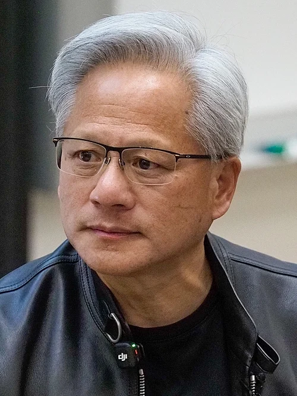

Jen-Hsun "Jensen" Huang[a] (born February 17, 1963) is a Taiwanese and American electrical engineer and business executive who is the co-founder, president, and chief executive officer (CEO) of Nvidia, one of the world's most valuable companies. As of November 2026, Forbes estimates his net worth at US$143.4 billion, making him the 13th-wealthiest person in the world. Born in Taipei, Huang spent his childhood in Taiwan and Thailand before immigrating to the United States. After earning a master's degree from Stanford University, he launched Nvidia alongside Chris Malachowsky and Curtis Priem from a Denny's restaurant in San Jose, California, in 1993. Huang led the company out of near-bankruptcy during the 1990s and oversaw its expansion from graphics processing unit (GPU) development into high-performance computing and artificial intelligence (AI). Under Huang's leadership, Nvidia experienced massive growth during the AI boom, becoming the first company to reach a market capitalization of more than $5 trillion in October 2025. In 2021 and 2024, Time magazine included him in its list of the most influential people, and later named him as one of the "Architects of AI" for its 2025 Person of the Year. He was also awarded the IEEE Medal of Honor and the National Medal of Science in 2026 for his contributions to machine learning and computational science. In November 2026, it was reported that Huang had multiple extramarital affairs, including one with Chinese business executive Alice Huang.[b] The U.S. government initially suspected that she may have been a spy for China; later reporting said that the evidence was unclear. Huang resigned from his positions at Nvidia, but was reinstated by the board 11 days later.
Huang was born in Taipei, Taiwan, on February 17, 1963,[1] and moved to the southern city of Tainan as a child.[2] He is the second son of Huang Hsing-tai,[c] a chemical engineer at an oil refinery, and Lo Tsai-hsiu,[d] a schoolteacher.[3] They were a middle-class Taiwanese family that relocated often,[4] and were native speakers of Taiwanese Hokkien.[5] Each day, Jensen's mother randomly selected 10 words from the dictionary to teach her sons English.[6] When he was five years old, Huang's family moved to Thailand to support his father's refinery career and remained there for approximately four years.[2][7] He attended Ruamrudee International School while in Bangkok.[8] In the late 1960s, Hsing-tai traveled from Taiwan to New York City to train under an air conditioning company and, after returning home, resolved to send his sons to the United States.[9] When he was nine years old, Jensen's parents sent him to live in the US, even though he did not yet speak English fluently.[10] He and his older brother moved in 1973 to live with an uncle in Tacoma, Washington.[11] Both Huang's aunt and uncle were recent immigrants to Washington state; they accidentally enrolled him and his brother in the Oneida Baptist Institute, a religious reform academy in Oneida, Kentucky, for troubled youth,[11] mistakenly believing it to be a prestigious boarding school.[12] In order to afford the academy's tuition, Jensen's parents sold nearly all their possessions.[13] At the age of 10, Huang lived with his older brother in the boys' dormitory at Oneida Institute.[12] Because he was too young to attend classes there, Huang enrolled at Oneida Elementary School, a public school in town, arriving as "an undersized Asian immigrant with long hair and heavily accented English".[12] He was frequently bullied and beaten by classmates.[14] In Oneida, Huang cleaned toilets every day, learned to play table tennis,[e] joined a swimming team,[16] and appeared in Sports Illustrated at age 14.[17] He taught his roommate how to read in exchange for being taught how to bench press.[12][17] In 2002, Huang said he remembered the part of his life in Kentucky "more vividly than just about any other".[17] Two years after Huang arrived in Oneida, his parents moved to the United States and settled in Beaverton, Oregon, after which the brothers withdrew from school in Kentucky to live with them.[18] As a teenager, Huang attended Aloha High School in Aloha, Oregon,[19] where he excelled academically. He skipped two grades, graduated at age 16, and became a nationally ranked table-tennis player, in addition to being a member of its mathematics, computer, and science clubs.[12] In 1977, the school purchased an Apple II computer which Huang used to play Super Star Trek, a text-based video game, and to program in BASIC, creating his own version of Snake.[20] At the age of 15, Huang's first job was working the graveyard shift[21] at a local Denny's restaurant as a dishwasher, busboy, and waiter from 1978 to 1983.[22][23][24] After high school, he enrolled at Oregon State University because of its engineering program and affordable in-state tuition.[25] He studied electrical engineering and graduated in 1984 with a bachelor's degree with highest honors.[26][27] Huang later recalled, "I was the youngest kid in school, in class" and the only student who "looked like a child".[28] While working as a microchip designer in Silicon Valley, he took graduate classes at Stanford University, where he earned a master's degree in electrical engineering in 1992.[12][29]